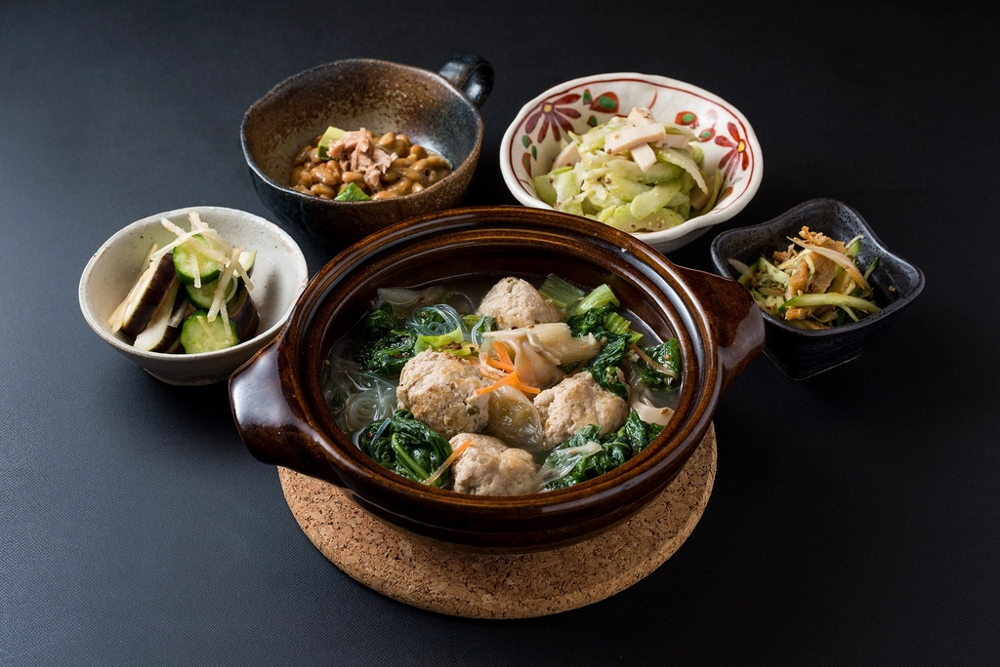

メニュー
当店には、種類豊富なベーグルと、お惣菜・お野菜が並びます。その日何が並ぶかは、ぜひ店頭でお確かめください。
価格は店頭にてご確認ください。

お惣菜・お野菜
ベーグルだけでなく、お惣菜やお野菜もあわせてお買い求めいただけます。内容は日によって変わる、その日ならではの一品です。具体的な品目や価格は、ぜひ店頭にてご確認ください。
※写真はイメージです(仮素材)
当店には、種類豊富なベーグルと、お惣菜・お野菜が並びます。その日何が並ぶかは、ぜひ店頭でお確かめください。
価格は店頭にてご確認ください。

ベーグルだけでなく、お惣菜やお野菜もあわせてお買い求めいただけます。内容は日によって変わる、その日ならではの一品です。具体的な品目や価格は、ぜひ店頭にてご確認ください。
※写真はイメージです(仮素材)